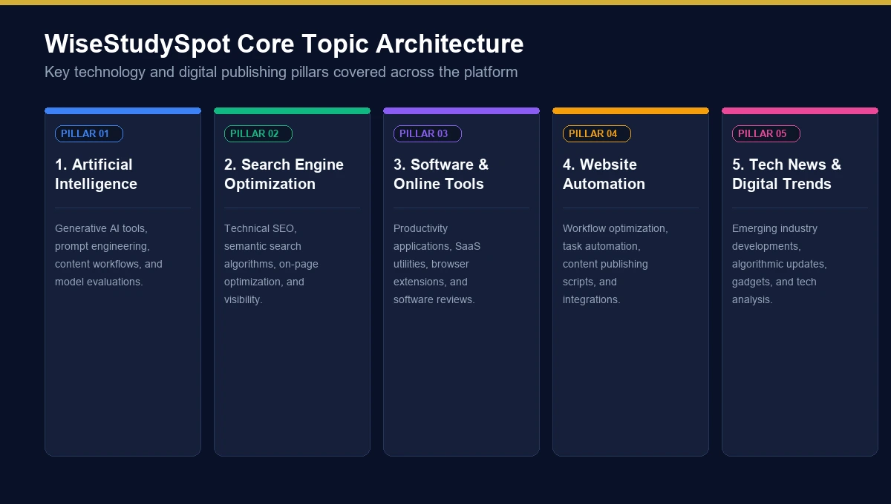
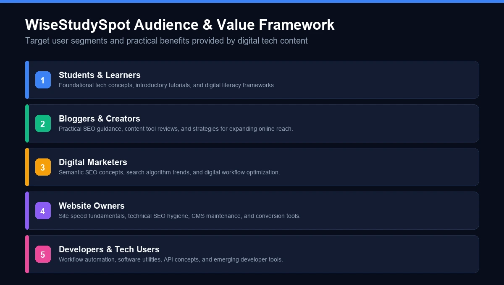
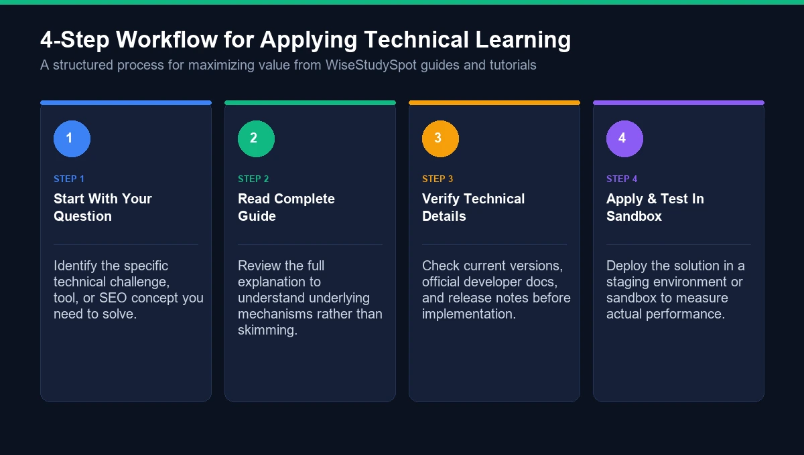

If you have recently searched for wisestudyspot .com, you may be wondering what the website actually is, what kind of information it publishes, and whether it is useful for learning about technology, SEO, artificial intelligence, software, and digital marketing.
The name can be slightly confusing because several websites and third-party pages use similar variations of the WiseStudySpot name. However, current search results around WiseStudySpot .com increasingly associate the site with technology and digital-growth content, including AI, SEO, software and tools, website automation, tech news, gadgets, reviews, and practical how-to guides.
This guide takes a closer look at WiseStudySpot .com, its apparent focus, the subjects readers may encounter, how to evaluate information published online, and how to distinguish the actual .com website from similarly named domains.
What Is WiseStudySpot .com?
WiseStudySpot .com is a web-based informational publication associated with technology and digital topics.
Rather than being limited to traditional academic education, current search results indicate that the website covers subjects connected with the modern digital ecosystem. These include artificial intelligence, search engine optimization, software tools, website development, automation, technology news, gadgets, reviews, and practical tutorials.
This distinction is worth mentioning because some third-party articles describe WiseStudySpot primarily as an educational or online-learning resource. The broader search landscape suggests a more technology-oriented publication.
In simple terms, someone visiting WiseStudySpot may be interested in questions such as:
- How does a particular AI tool work?
- What is semantic SEO?
- How can a website improve its search visibility?
- Which software can help with productivity?
- What technology trends are worth understanding?
- How do website owners automate repetitive tasks?
- What are the latest developments in AI and digital technology?
The exact subjects and articles can change as the website publishes new material.
WiseStudySpot .com at a Glance
Area | WiseStudySpot .com |
|---|---|
Website type | Informational technology and digital publication |
Core subjects | Technology, AI, SEO, software and digital growth |
AI content | AI tools, generative AI and practical applications |
SEO content | Technical SEO, semantic SEO and search visibility |
Software | Tools, extensions, automation and productivity software |
Technology | Tech developments, gadgets and digital trends |
How-to content | Practical guides and tutorials |
Potential audience | Beginners, creators, marketers, developers and website owners |
Primary purpose | Informational and educational content |
The important point is that WiseStudySpot .com is better understood through the content it publishes rather than simply through the word “study” in its domain name.

What Does WiseStudySpot .com Cover?
One of the interesting things about WiseStudySpot is the connection between technology and practical digital knowledge.
Several major topic areas appear around the website.
1. Artificial Intelligence
Artificial intelligence (AI) is one of the major technology subjects associated with WiseStudySpot.
AI has moved from being a specialized research topic to something used by marketers, developers, content creators, businesses, and everyday users.
AI-related content can cover subjects such as:
- Generative AI
- AI writing tools
- AI-assisted workflows
- AI automation
- AI content creation
- AI-powered software
- AI productivity tools
- AI for websites
- AI-assisted development
For readers, the most useful AI articles are usually those that explain not only what a tool does but also when it makes sense to use it and what limitations it has.
That practical approach is especially important because AI products and their features can change rapidly.
2. Search Engine Optimization
Another important topic connected with wisestudyspot .com is SEO, or search engine optimization.
SEO involves improving the way websites are discovered, understood, and presented in search engines.
A website owner may encounter subjects such as:
- Keyword research
- On-page SEO
- Technical SEO
- Semantic SEO
- Internal linking
- Backlink analysis
- Content optimization
- Search intent
- Organic traffic
- Website structure
- Search visibility
SEO is no longer simply about inserting a keyword repeatedly into an article.
Modern search optimization involves understanding the topic, answering user intent, creating useful content, improving website accessibility and structure, and building a coherent relationship between related pages.
That makes SEO content particularly relevant to bloggers, publishers, businesses, affiliate marketers, and website owners.
3. Software and Online Tools
Software is another area that fits naturally into the WiseStudySpot technology focus.
There are thousands of applications available today for:
- Productivity
- SEO
- Marketing
- Writing
- Design
- Automation
- Project management
- Analytics
- Website development
- Artificial intelligence
A good software guide should do more than list features.
Readers usually want to know:
What does the tool actually do?
Who is it for?
What problem does it solve?
What are its limitations?
Is there a free version?
How does it compare with alternatives?
These questions make software-related articles useful to both beginners and experienced digital professionals.
Because software pricing and features can change, users should also check the official product website before making a purchase or relying on a specific feature.
4. Website Automation
Website automation is another relevant part of the digital-growth ecosystem.
Automation can reduce repetitive work by allowing software to perform predefined tasks.
For example, businesses may automate:
- Data collection
- Notifications
- Content workflows
- Reporting
- Email sequences
- Website maintenance
- Lead management
- Social media workflows
- Analytics processes
Automation does not necessarily mean removing humans from a workflow.
In many cases, the better approach is to automate repetitive steps while keeping human review for decisions that require judgment.
5. Technology News and Trends
Technology changes quickly.
Artificial intelligence, cybersecurity, cloud computing, smartphones, developer tools, digital identity, and other emerging technologies can change how people work and communicate.
WiseStudySpot-related search results also connect the publication with broader technology coverage, including tech news, gadgets and reviews.
For readers, technology news can be useful when it answers a simple question:
Why does this development matter?
A headline may tell you that a company launched a new feature. A useful article explains what changed, who is affected, and what the development means in practical terms.
Why Are People Searching for WiseStudySpot .com?
The keyword wisestudyspot .com can represent several different search intentions.
Someone may be trying to:
- Find the official website.
- Understand what WiseStudySpot is.
- Learn what topics the website covers.
- Find WiseStudySpot SEO content.
- Explore AI-related articles.
- Find software or technology guides.
- Understand whether the website is legitimate.
- Find a particular WiseStudySpot article.
- Learn about WiseStudySpot technology.
- Distinguish WiseStudySpot .com from similar domains.
This is known as mixed search intent.
That is why a useful guide should not focus on only one interpretation of the keyword.
Instead, it should help the reader understand both the website and the wider context surrounding the WiseStudySpot name.
WiseStudySpot .com vs. Similar WiseStudySpot Websites
This is one of the most important things to understand when searching for WiseStudySpot.
There are multiple websites using similar variations of the name, including domains using extensions such as .org and .co.uk.
That does not automatically mean that they are operated by the same publisher.
For example, one similarly named website describes itself as a platform for learners and publishes general informational articles.
Therefore, always check the exact domain before assuming that information from one WiseStudySpot website applies to another.
Check These Details
Before trusting a page, look at:
- The exact domain name
- The website's About page
- Author information
- Contact details
- Privacy policy
- Publication date
- Links to official sources
- The context of the article
A single letter or domain extension can lead to an entirely different website.
Is WiseStudySpot .com an Online Learning Platform?
Not necessarily in the traditional sense.
The word “study” in the domain name might initially make visitors think of an academic learning platform, online school, or course provider.
However, current search results associate WiseStudySpot .com more strongly with technology and digital-growth publishing, including AI, SEO, software, gadgets, technology, and how-to material.
A traditional online learning platform generally offers structured features such as:
- Courses
- Lessons
- Instructors
- Assignments
- Tests
- Progress tracking
- Certificates
An informational technology website has a different purpose.
Its primary format is usually articles, guides, explanations, reviews, and tutorials.
So it is better to look at the actual features available on the website instead of assuming its business model from its domain name.

Who Can Benefit From WiseStudySpot .com Content?
Technology information is not useful only for programmers.
The subjects associated with WiseStudySpot can potentially help several types of readers.
Students and Learners
Students interested in technology can use explanatory articles to become familiar with unfamiliar concepts.
For example, a beginner may want to understand:
- What is AI?
- What is SEO?
- How does cloud software work?
- What is automation?
- What is a browser extension?
Bloggers
Bloggers can benefit from information about:
- Content strategy
- SEO
- Keyword research
- Website optimization
- AI-assisted workflows
- Internal linking
Digital Marketers
Digital marketers often work across several disciplines, including SEO, content marketing, analytics, paid advertising, social media, and automation.
Technology-focused guides can help marketers understand tools and workflows outside their primary specialty.
Website Owners
Website owners may be interested in:
- Search visibility
- Website performance
- SEO
- Software
- Automation
- Content management
- AI tools
Developers and Technical Users
Developers may also find value in technology guides, especially when they explain emerging tools or practical workflows without assuming that every reader is an expert.

How to Use WiseStudySpot .com Effectively
Reading an article is only the first step.
If you want to get more value from a technology or SEO resource, use a simple process.
Step 1: Start With Your Question
Do not browse randomly.
Begin with a specific problem.
For example:
“I need to understand semantic SEO for my website.”
That gives you a much clearer reason for reading.
Step 2: Read the Complete Explanation
Avoid judging an article only by its introduction.
Look for:
- Definitions
- Examples
- Practical steps
- Limitations
- Sources
- Updated information
Step 3: Verify Important Information
Technology changes quickly.
A tool's price, features, interface, API, availability, or terms can change after an article is published.
For important decisions, confirm current information from the official source.
Step 4: Apply What You Learn
The difference between reading and learning is application.
If you read about SEO, audit a page.
If you read about automation, identify one repetitive task.
If you read about AI, test a relevant workflow.
Practical experience helps turn information into knowledge.
How to Evaluate Information on WiseStudySpot .com
A professional-looking website is not automatically a reliable source.
Use a few basic checks.
Check the Author
Look for the author's name and background.
For technical topics, author expertise can provide useful context.
Check the Date
SEO, AI, software, and technology change rapidly.
A tutorial written years ago may describe an interface or feature that no longer exists.
Check Primary Sources
When an article discusses a particular product, technology, regulation, or software feature, compare important details with the original source.
Primary sources may include:
- Official documentation
- Company websites
- Government websites
- Academic institutions
- Research publications
- Product documentation
Look for Evidence
A strong article should explain its claims instead of relying entirely on statements such as “this is the best tool” or “this method guarantees rankings.”
SEO and digital marketing rarely work through one universal formula.
Results can vary depending on the website, market, competition, content quality, technical implementation, and many other factors.
WiseStudySpot .com and SEO: What Readers Should Understand
The phrase “SEO WiseStudySpot .com” may appear in searches from people looking for information about the site's SEO content or the site's search visibility.
There is an important distinction here.
SEO Content About WiseStudySpot
This means an article discusses SEO topics connected with the website.
SEO Performance of WiseStudySpot
This refers to measurable factors such as:
- Organic visibility
- Indexed pages
- Keyword rankings
- Backlinks
- Referring domains
- Search traffic
- Technical SEO
- Content performance
Those metrics require actual SEO tools and current data.
Simply looking at a domain name does not tell you how well a website ranks.
This distinction helps prevent a common mistake: treating a general article about a website as proof of its actual search performance.
What About “Shopify WiseStudySpot .com”?
Another related search phrase is “Shopify WiseStudySpot .com.”
Shopify is an e-commerce platform used by businesses to create and operate online stores.
However, the appearance of the words Shopify and WiseStudySpot together does not by itself establish that WiseStudySpot operates a Shopify store or provides Shopify services.
When evaluating such a claim, look for direct evidence from:
- The official website
- An official Shopify store
- A verified business profile
- An official announcement
- Clearly attributed documentation
This is a useful rule for any website-related search query: association between two keywords is not automatically proof of a business relationship.
What Makes WiseStudySpot .com Different From a Generic Blog?
The technology ecosystem is crowded with blogs.
What makes a technology publication useful is not simply the number of articles it publishes.
The real value comes from whether its content helps readers answer practical questions.
For example:
Generic approach:
AI is changing the world.
Useful approach:
Here is what a specific AI technology does, how it works at a basic level, where it can be useful, and what limitations users should understand.
The second format gives readers something they can actually use.
This is especially important for subjects such as AI and SEO, where exaggerated claims can spread quickly.
Advantages of Using Online Technology Resources
A website such as WiseStudySpot can be useful as part of a broader research process.
Easy Access
Articles are available through a web browser without requiring traditional classroom attendance.
Beginner-Friendly Explanations
Complex technology can be introduced through simpler explanations.
Wide Range of Subjects
Readers can move from SEO to AI, software, automation, gadgets, and other technology topics.
Practical Learning
How-to guides can help readers move from theory toward implementation.
Continuous Discovery
Technology changes constantly, so online publications can introduce readers to new tools and developments.
But online articles should be treated as one part of the research process, especially when the topic involves money, security, business decisions, or technical implementation.
Potential Limitations to Keep in Mind
No technology publication should be treated as an unquestionable authority.
Readers should be aware of several common limitations.
Information Can Become Outdated
Software and AI tools change quickly.
Third-Party Reviews May Age
Prices and features can change after publication.
Search Results Can Be Confusing
Similar domain names can make it difficult to identify the correct website.
General Articles Have Limits
A beginner-friendly explanation may not contain enough technical detail for an advanced implementation.
SEO Results Vary
No legitimate article can guarantee a particular Google ranking simply because you follow a list of recommendations.
Using online resources effectively means knowing where an article ends and further research needs to begin.
Is WiseStudySpot .com Safe to Browse?
Website safety should be evaluated using normal web-safety practices rather than relying only on a domain name.
Before downloading software or entering sensitive information, check:
- Whether you are on the correct domain
- Whether the connection uses HTTPS
- Whether the page clearly identifies its purpose
- Whether links lead to expected destinations
- Whether downloads come from official sources
- Whether a page requests unnecessary personal information
- Whether the site's privacy information is available
For software specifically, it is generally sensible to obtain downloads directly from the software developer's official website rather than from an unfamiliar third-party download page.
WiseStudySpot .com: What Should You Expect?
If you are searching for wisestudyspot .com, the simplest expectation is that you may encounter content focused on the intersection of technology, AI, SEO, software, websites, automation, and digital growth.
The site's broader technology positioning also includes areas such as gadgets, reviews, and technology-related news.
That makes the site potentially relevant to a broad digital audience rather than only traditional students.
At the same time, users should distinguish the .com website from similarly named domains and should verify information when the subject is important or time-sensitive.
Frequently Asked Questions About WiseStudySpot .com
What is WiseStudySpot .com?
WiseStudySpot .com is an informational website associated with technology and digital topics. Current search results connect it with areas including artificial intelligence, SEO, software and tools, website automation, technology news, gadgets, reviews, and how-to guides.
What does WiseStudySpot .com cover?
The website is associated with topics such as AI, search engine optimization, software, digital marketing, website automation, technology, gadgets, reviews, and practical tutorials.
Is WiseStudySpot .com an education website?
The name may suggest an academic education website, but current search results indicate that the .com site has a broader technology and digital-growth focus. It should not automatically be treated as a traditional online course or university platform.
Is WiseStudySpot .com the same as WiseStudySpot.org?
Not necessarily. Different domain extensions can represent different websites and publishers. Searchers should check the exact domain, ownership information, About page, and other identifying details before assuming two sites are connected.
Is WiseStudySpot .com useful for SEO information?
WiseStudySpot-related search results include SEO topics such as technical SEO, semantic SEO, search visibility, and website optimization. As with any SEO resource, readers should verify time-sensitive recommendations against current search-engine documentation and other authoritative sources.
Does WiseStudySpot .com cover artificial intelligence?
Yes, current search results associate the website with AI-related content, including artificial intelligence tools and practical digital applications.
Can beginners use WiseStudySpot .com?
Yes. Technology and digital topics can be useful to beginners when they are presented with clear definitions, examples, and practical explanations. Readers should still verify important technical information before implementing it.
Does WiseStudySpot .com provide software reviews?
The site's current technology positioning includes software and tools as well as gadgets and reviews. Because software features and pricing change, users should confirm current details with the official product website.
What is “SEO WiseStudySpot .com”?
The phrase generally refers to SEO information associated with WiseStudySpot .com or searches about the website's SEO-related content. It should not automatically be interpreted as the name of a dedicated SEO tool.
What does “Shopify WiseStudySpot .com” mean?
It is a search phrase combining Shopify with WiseStudySpot .com. The phrase itself does not establish that WiseStudySpot operates a Shopify store or is affiliated with Shopify.
Final Thoughts on WiseStudySpot .com
WiseStudySpot .com is best understood as a technology and digital-information destination rather than simply a conventional study website.
Its associated subject areas include artificial intelligence, SEO, software and tools, website automation, technology news, gadgets, reviews, and practical how-to content.
For beginners, marketers, creators, website owners, and technology enthusiasts, this type of content can provide a useful starting point for exploring unfamiliar subjects.
The biggest thing to remember is simple: check the exact domain and verify important information.
Several similarly named WiseStudySpot websites appear online, and their content or purpose may differ.
If you use WiseStudySpot .com as part of your research process, combine its articles with official documentation, primary sources, hands-on testing, and other reputable references. That approach gives you a much stronger foundation than relying on any single blog or search result.
In a digital world where AI, SEO, software, and technology change almost every week, the most valuable resource is not simply more information. It is clear information that helps you understand what is changing, why it matters, and how to use that knowledge responsibly.
For more such useful information read our site ateliergolddruck.com